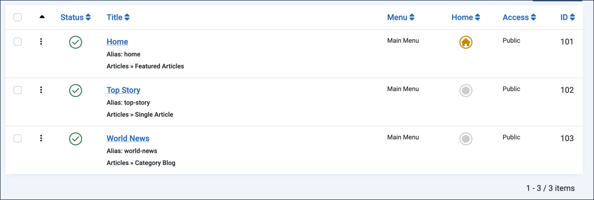
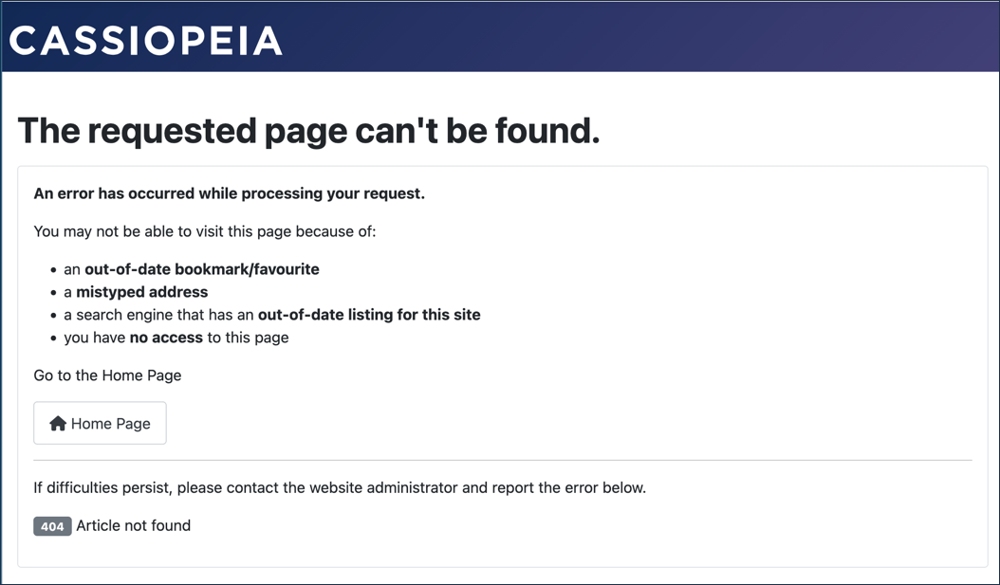
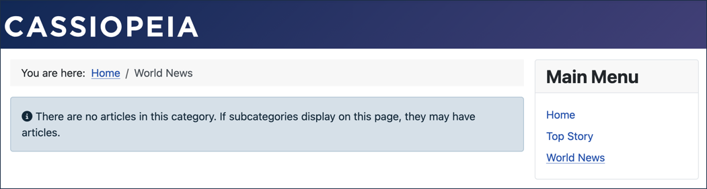
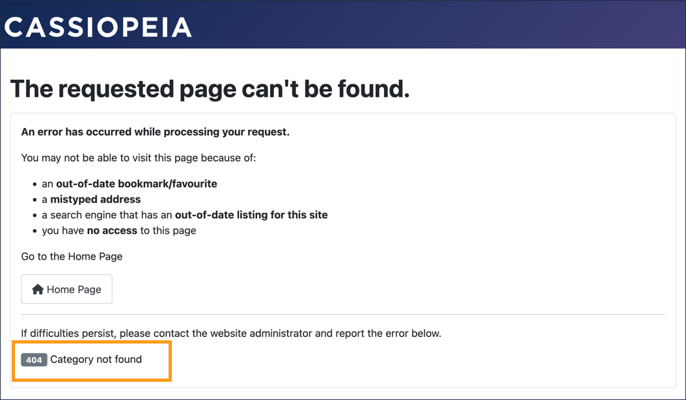

Menu items provide access to articles, not unlike picture frames display artworks that are otherwise stored in the backroom of a museum. This tutorial demonstrates the use of menus and explores the relationship between menus, articles, and categories.
Prerequisites
Setup
Add an Article to World News
- Log in to Joomla backend and navigate to the Home Dashboard.
- In the Administrator Menu, click Content > Articles.
- Click New. Result: A new-article form appears.
- Title: Central Bank Holds Interest Rates Steady
- Category: World News
- Click Save & Close.
Create Menu Items
- In the Administrator Menu, click Menus > Main Menu.
- Click New. Result: A new-menu-item form appears.
- Title: Top Story
- Menu Item Type: Articles > Single Article
- Article: Trade Summit Ends in New Agreement
- Click Save & New.
- Title: World News
- Menu Item Type: Articles > Category Blog
- Category: World News
- Save & Close

Steps
Verify the Setup
- View the site. Result: The Main Menu contains links for Top Story and World News.
- Click Top Story. Result: The Trade Summit Ends in New Agreement article appears.
- Click World News. Result: Both articles appear.
Effect of Unpublishing Menu Items
- Return to Menus > Main Menu.
- Click the status icon for World News and Top Story, changing their status to Unpublished.
- View the website. Result: The menu items no longer appear. Note: Menu items must be published to appear on the website, and articles need a published menu item to be accessible.
- Republish the menu items.
Effect of Unpublished Articles on Menu Items
- In the Administrator Menu, click Content > Articles.
- Unpublish Trade Summit Ends in New Agreement and Central Bank Holds Interest Rates Steady by clicking their status icons.
- View the website. Result: Both menu items still appear in the Main Menu.
- Click Top Story. Result: An error message is displayed. Note: This single-article menu item is still active, but the unpublished article is inaccessible.

- Click World News. Result: An empty list appears. Note: The category-blog menu item is active, but will only display its published articles.

- Return to the articles list and republish both articles.
Effect of Unpublishing a Category on Menu Items
- In the Administrator Menu, click Content > Categories.
- Unpublish the World News category by clicking its status icon.
- View the website. Result: Both menu items still appear in the Main Menu.
- Click Top Story and then World News. Result: An error message is displayed. Note: The menu items and articles are active, but both require a published category to function.

- Return to the category list and republish the World News category.
Concepts
Menu items, articles, and categories are interdependent. Menu items provide access to articles; articles and some menu items require categories.
Menu items can be thought of as the picture frames in which articles, and lists of articles (featured items, blogs, etc.), appear.
Menu items can appear even when the lists or articles they link to have issues.